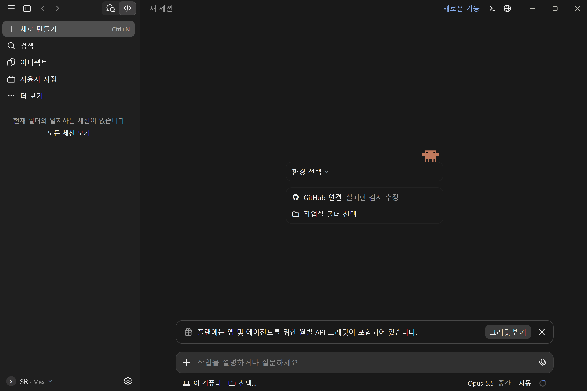
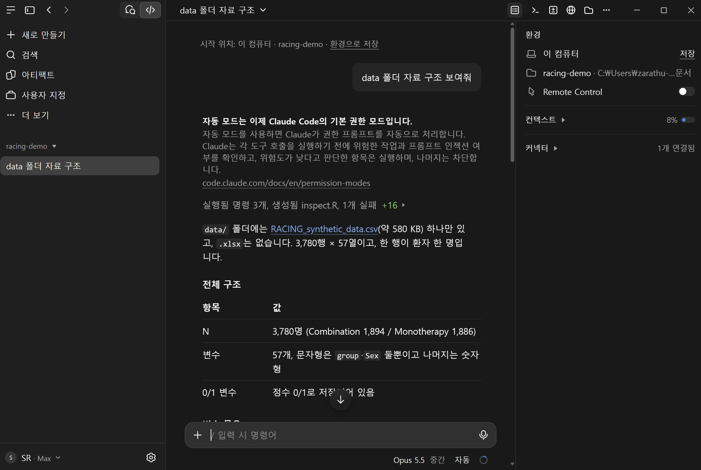
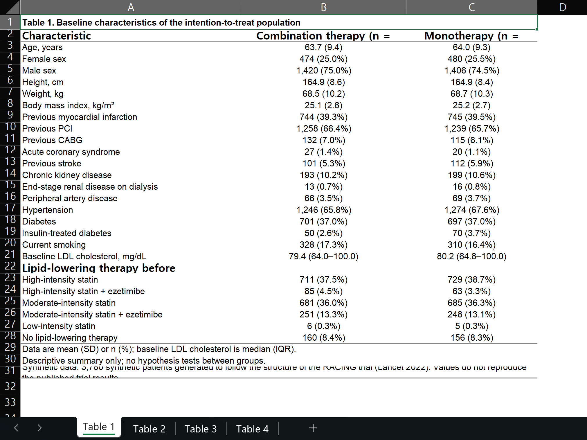
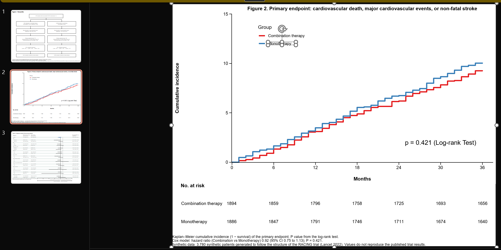

젊은정위기능신경외과의사 모임
2026-11-20
1. 설치
ChatGPT·Claude 데스크톱
2. 세팅
CLAUDE.md: 분석 스타일 고정
3. 사용법
자연어 지시 → 표·그림 파일
4. 재현
가상자료 RACING 논문 재현
목표: 내 연구에 AI agent 직접 활용
| 구분 | 일반 챗봇 | AI agent (Codex, Claude Code) |
|---|---|---|
| 작업 방식 | 답변 → 사람이 복사 | 파일 읽기·수정, 명령 실행 |
| 실행 위치 | 웹 브라우저 | 내 컴퓨터 작업 폴더 |
| 맥락 | 질문 하나 | 프로젝트 파일 + 이전 작업 |
| 결과물 | 코드 조각 | .R, 표(Excel), 그림(PPT) 파일 |
코드 알려주는 도구 X → 작업 폴더에서 코드 작성·실행·수정하는 도구 O
ChatGPT 데스크톱 · Codex
AGENTS.mdClaude 데스크톱 · Claude Code
CLAUDE.md사용법 거의 동일 · 오늘은 Claude 기준


연구 하나 = 폴더 하나 · 데이터, global.R, analysis.R, 결과물 모두 한 폴더
| 위치 | 적용 범위 | 내용 |
|---|---|---|
~/.claude/CLAUDE.md |
모든 프로젝트 | 패키지, 코딩 스타일, 표·그림 저장 규칙 |
프로젝트/CLAUDE.md |
해당 폴더 | 연구 설계, 변수 설명, 산출물 목록 |
my_study/
├── CLAUDE.md ← 연구 지침
├── data/ ← 원본 자료
├── global.R ← 전처리
├── analysis.R ← 분석
└── results/ ← xlsx, pptx한 번 작성 → “Table 1 만들어줘” 한 줄에도 같은 스타일
코딩 스타일
패키지, 파일 구성
표 규칙
제목, 각주, 95% CI, 라벨, Excel
그림 규칙
PPT 벡터그래픽, P value 표기
자주 틀리는 것
패키지별 에러, 각주·검정 불일치
예시 파일 CLAUDE_example.md · 본인 스타일에 맞게 수정
## 기본 원칙
- data.table을 메인으로, pipe는 %>%만
- 정리는 global.R, 분석은 analysis.R로 분리
- 파생변수는 out 만들기 전에 모두 만든다. out 이후 새 변수 금지
## global.R 순서
1. 데이터 읽기 → 2. 전처리·파생변수 → 3. varlist
4. out → 5. factor/numeric 지정 → 6. out.label (jstable::mk.lev) → 7. 라벨
- 생존분석이면 varlist$Event, varlist$Time 순서를 맞춘다
- 0/1 변수는 levels = c("0", "1")로 고정매번 같은 구조의 global.R → 다른 연구 코드도 쉽게 파악
## 표
- flextable + set_caption(표 제목) + add_footer_lines(통계방법)
- 표는 Excel로만 저장 (flexlsx + openxlsx2, 표마다 시트 하나)
- 같은 그룹명 반복 금지 → merge_v()
- raw 변수명 대신 라벨
- 모든 점추정에 95% CI, CI 산출법은 footer에
## 그림
- officer + rvg로 PPT 벡터그래픽, fullsize
- plot_list에 모은 뒤 for문으로 슬라이드 추가
- 그림 속 통계값은 직접 계산해서 annotate()
- P value는 소수 셋째 자리, 0.001 미만은 P < 0.001겪은 에러 → 한 줄 추가 → 같은 실수 반복 X
| 모드 | 동작 | 시기 |
|---|---|---|
| 자동 (기본) | 위험도 낮은 작업은 실행, 위험한 작업은 차단 | 기본값 |
| 매번 묻기 | 파일 수정·명령 실행 전 확인 | 작업 내용 직접 확인 |
| 수정 자동 승인 | 파일 수정 바로, 명령은 확인 | 익숙해진 뒤 |
| Plan mode | 계획만, 실행 X | 큰 분석 시작 전 |
기본은 자동 · 처음엔 매번 묻기로 작업 내용 확인도 방법
| 입력 | 기능 |
|---|---|
@global.R |
파일 지정 |
| PDF·이미지 끌어넣기 | 논문 표 첨부 → “이 형식으로” |
Esc |
작업 중단 |
/clear |
새 대화 |
/compact |
긴 대화 요약 후 계속 |
| 막연한 지시 | 구체적인 지시 |
|---|---|
| “분석해줘” | “group 기준 Table 1, Age는 nonnormal” |
| “그래프 그려” | “primary endpoint KM, cumulative incidence, months” |
| “저장해” | “PPT로 저장, fullsize 벡터그래픽” |
| 패키지 | 역할 |
|---|---|
data.table |
읽기·전처리 |
jstable |
Table 1, 회귀분석 표 (CreateTableOneJS, cox2.display) |
jskm |
Kaplan–Meier 그림 |
flextable |
논문용 표 서식 (제목, 각주, 병합) |
flexlsx + openxlsx2 |
flextable → Excel 시트 |
officer + rvg |
그림 → 편집 가능한 PPT |
forestploter |
subgroup forest plot |
library(flextable); library(flexlsx)
library(openxlsx2)
ft_list <- list(
"Table 1" = tb1 %>% flextable() %>%
set_caption("Table 1. Baseline characteristics") %>%
add_footer_lines("Values are mean (SD) or n (%).")
)
wb <- wb_workbook()
for (sn in names(ft_list)) {
wb$add_worksheet(sn)
wb <- wb_add_flextable(wb, sn, ft_list[[sn]])
}
wb$save("results/Tables.xlsx")

벡터그래픽 · PPT에서 글자·색·선 바로 수정
원자료 대신 같은 구조의 가상자료 (3,780명, 57변수)
racing-demo/
├── CLAUDE.md ← RACING 분석 지침
├── data/RACING_synthetic_data.csv
└── paper/RACING_Lancet2022.pdfCLAUDE.md: 연구 설계, 변수, 표·그림별 방법 (CI 수준, 검정법)
지시 1. data 폴더 자료 읽어서 CLAUDE.md 지침대로 global.R 만들어줘.
지시 2. analysis.R 만들어서 Table 1–4, Figure 1–3 만들어줘. 표는 Excel, 그림은 PPT로 저장해줘.
실제 소요: analysis.R 약 8분 · 영상은 배속 재생
| 항목 | 확인 내용 |
|---|---|
| 대상자 수 | 전체 3,780명, 군별 1,894 / 1,886 |
| 분모 | LDL-C: 시점별 측정자만 |
| CI 수준 | primary 90% CI (비열등성), 나머지 95% CI |
| 각주 | 실제 검정·CI 산출법과 일치 여부 |
| 저장 | Excel 시트 4개, PPT 그림 3장 |
AI 결과도 직접 쓴 코드처럼 검토 · 수정은 말로 지시
CLAUDE_example.md → ~/.claude/CLAUDE.md 저장, 내 스타일로 수정data/에CLAUDE.mdCLAUDE.md에 추가CLAUDE.md + global.R + analysis.R 함께 보관통계적 판단과 결과 해석은 연구자 몫
Zarathu Co., Ltd.